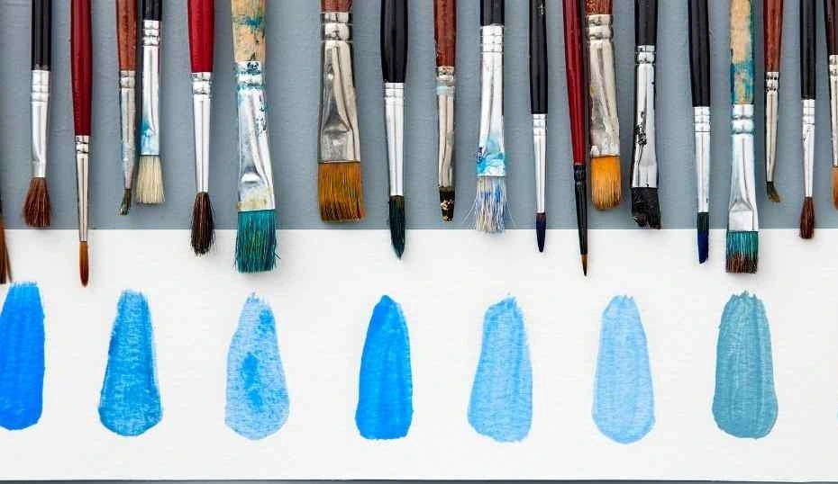
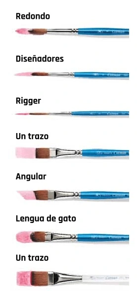
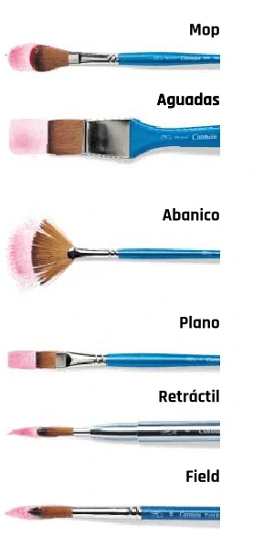
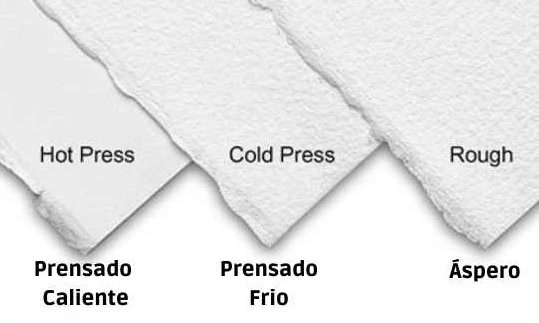

Pinceles
Los pinceles de acuarela vienen en una gama confusamente amplia de tamaños, formas y materiales para elegir. Una de las características más desconcertantes de los pinceles es su tamaño. ¿Qué significan todos esos números? Cual es un pincel 000 liner o un 12 redondo? Los pinceles son las herramientas que utiliza para comunicar sus ambiciones artísticas en el papel. Y los buenos pinceles de acuarela son caros. Por lo tanto, vale la pena tomarse un tiempo para comprender sus herramientas. En pocas palabras… Los tamaños de los pinceles se basan en un sistema de numeración. Los tamaños de pincel más comunes van desde 000 (pequeños) a 24 (grandes). Pero hay algo más que eso. ¡No todos los tipos de pinceles de acuarela usan esta regla numerada!
Muestras
Tipos de Pinceles
 Papeles
El papel profesional para artistas de la Acuarela es aquel papel 100% algodón hecho con molde. La superficie debe sentirse rugosa y debe tener una consistencia absorbente como la piel de melocotón. No debe presentar una textura con una especie de tejido similar a un «waffle». Ventajas : Más duradero, aguanta el líquido enmascarador, frotando, levantando, aplicando capas. Los lavados fluidos fluyen más bellamente. Los colores parecen más vibrantes. Mejor equilibrio entre absorción y flujo. Por lo general, se puede pintar igualmente bien en ambos lados. Contras : Más caro que el grado del estudiante. A menudo no está disponible fuera de las tiendas de suministros de arte.
Tipos de Papeles
